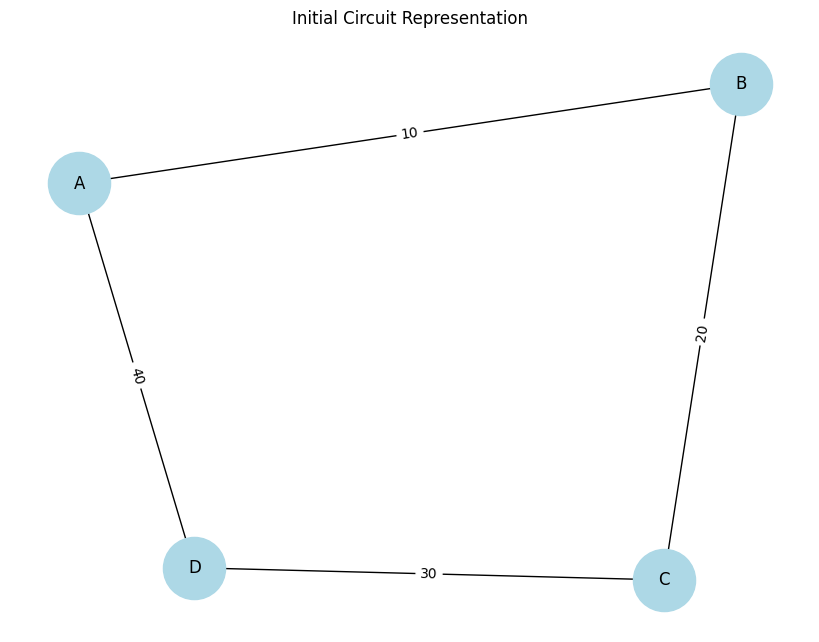
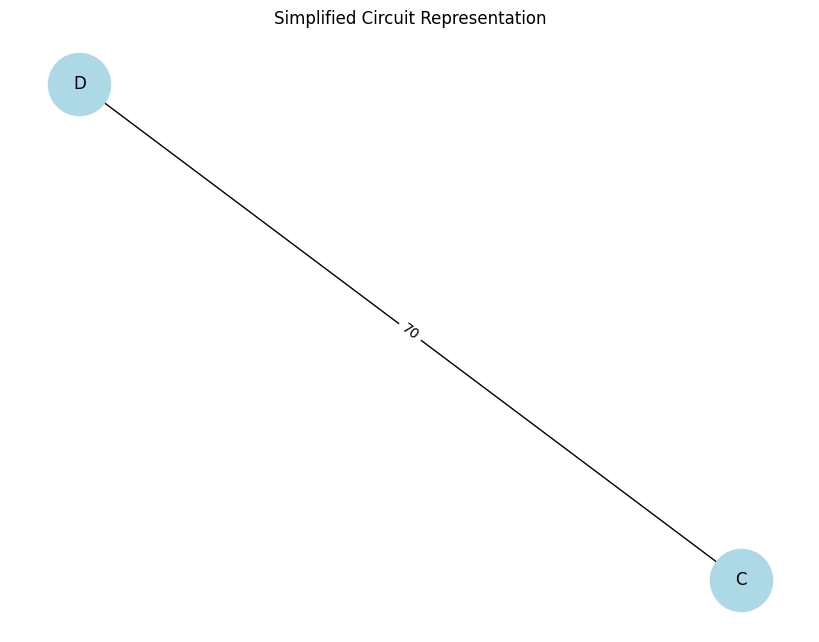
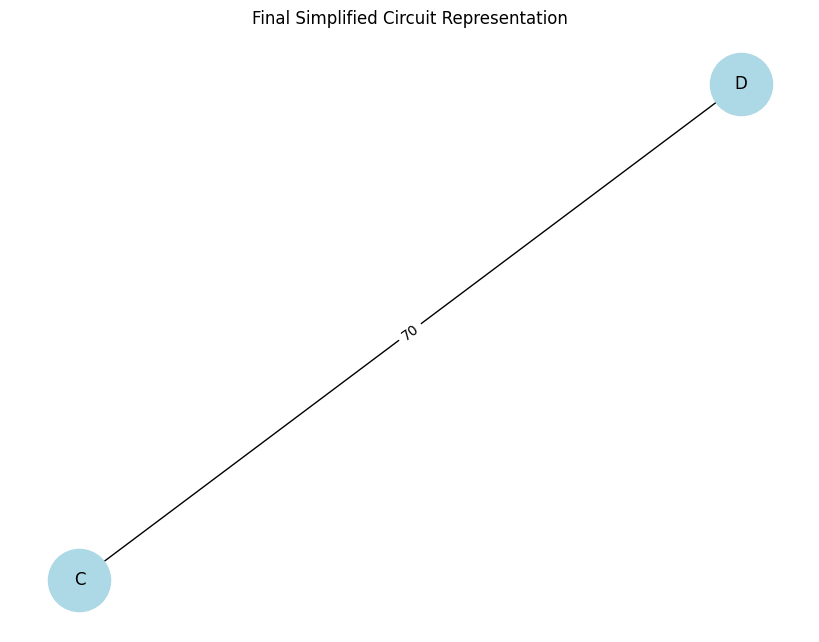
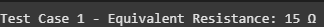

Problem 1
Equivalent Resistance Using Graph Theory
Introduction
Understanding and analyzing electrical circuits is a fundamental aspect of electrical engineering and physics. One of the essential tasks in circuit analysis is determining the equivalent resistance between two points. Traditional methods rely on step-by-step application of series and parallel resistor combinations, which can become impractical for large and complex circuits. The need for a more systematic and scalable approach arises in applications such as circuit simulation, network analysis, and embedded system design.
Graph theory provides an alternative and efficient approach by representing the circuit as a weighted graph, where:
Nodes correspond to junctions.
Edges correspond to resistors with resistance values as weights.
By systematically simplifying this representation using graph algorithms, we can compute the equivalent resistance efficiently. This approach is particularly useful in modern circuit analysis tools, simulation software, and optimization techniques used in electronic circuit design. It also provides an automated way to handle complex networks, making the process faster and less prone to human errors.
Motivation
Calculating equivalent resistance is a fundamental problem in electrical circuits, essential for understanding and designing efficient systems. Traditional methods involve iteratively applying series and parallel resistor rules, which become cumbersome for complex circuits. Graph theory provides a structured and algorithmic alternative, allowing us to model circuits as weighted graphs where:
Nodes represent circuit junctions.
Edges represent resistors, weighted by resistance values.
By employing graph reduction techniques, we can systematically simplify even intricate networks, leading to efficient circuit analysis methods used in modern applications like circuit simulation software, optimization problems, and network design. This method also integrates well with software-based solutions, allowing for real-time modifications and enhancements in circuit analysis.
Theoretical Background
Graph Representation of Electrical Circuits
An electrical circuit can be represented as a graph: Vertices (V): Represent junctions where resistors connect.
Edges (E): Represent resistors, with edge weights corresponding to resistance values.
Adjacency Matrix or List: Used to store the graph structure, where each row represents a node and each column represents a connection to another node with a specific resistance value.
Series and Parallel Resistance in Graphs
Series Connection: - Resistors in series have the same current flowing through them.
-
The total voltage across them is the sum of the individual voltages:
$$ V_{eq} = V_1 + V_2 + ... + V_n $$
-
Using Ohm’s Law (\( V = IR \)):
$$ I R_{eq} = I R_1 + I R_2 + ... + I R_n $$
-
Canceling the common current \( I \):
$$ R_{eq} = R_1 + R_2 + ... + R_n $$
-
Graphically, this corresponds to contracting a path of connected edges into a single edge, thus reducing the complexity of the graph.
Parallel Connection: - Resistors in parallel share the same voltage.
-
The total current is the sum of the individual currents:
$$ I_{eq} = I_1 + I_2 + ... + I_n $$
-
Using Ohm’s Law:
$$ \frac{V}{R_{eq}} = \frac{V}{R_1} + \frac{V}{R_2} + ... + \frac{V}{R_n} $$
-
Canceling the common voltage \( V \):
$$ \frac{1}{R_{eq}} = \frac{1}{R_1} + \frac{1}{R_2} + ... + \frac{1}{R_n} $$
-
Graphically, this corresponds to merging multiple edges between two nodes into a single edge with a new weight.
-
This merging reduces the computational complexity when analyzing circuits with multiple interconnected resistors.
Extended Formulas for Complex Cases
For circuits involving mixed configurations of series and parallel resistances, the equivalent resistance must be determined iteratively. If a circuit consists of nested parallel and series resistances, the calculation follows a hierarchical approach:
-
Identify the innermost parallel or series components.
-
Compute their equivalent resistance.
-
Replace these components with their equivalent resistance and repeat the process.
-
Continue until only one resistance remains.
For example, if a circuit consists of three resistors \( R_1, R_2, R_3 \) arranged in a mixed configuration:
- \( R_1 \) and \( R_2 \) in parallel:
$$ \frac{1}{R_{12}} = \frac{1}{R_1} + \frac{1}{R_2} $$
- Then, \( R_{12} \) is in series with \( R_3 \):
$$ R_{eq} = R_{12} + R_3 $$
- If an additional resistor \( R_4 \) is in parallel with \( R_{eq} \), we apply the parallel formula again:
$$ \frac{1}{R_{final}} = \frac{1}{R_{eq}} + \frac{1}{R_4} $$
Using advanced mathematical techniques such as matrix representation of circuits and Laplace transformations, we can generalize the problem for complex networks. The impedance matrix \( Z \) of the network can be derived using Kirchhoff’s laws and then reduced using determinant-based transformations.
Algorithmic Approach
To find the equivalent resistance between two nodes:
Construct the Graph: Parse circuit components into a graph data structure.
Identify Series and Parallel Components: Use graph traversal techniques such as Depth-First Search (DFS) or Breadth-First Search (BFS).
Iteratively Reduce the Graph:
-
Replace series connections with their equivalent resistance.
-
Merge parallel connections into a single equivalent resistor.
Repeat Until Simplification is Complete: Continue reducing until only two nodes remain (input and output terminals).
Output the Equivalent Resistance: The final edge weight represents the total equivalent resistance.
Algorithm Implementation
Pseudocode
function compute_equivalent_resistance(graph, start, end):
while graph has more than 2 nodes:
for each node in graph:
if node has exactly 2 neighbors (series connection):
neighbor_1, neighbor_2 = get_neighbors(node)
new_resistance = graph.get_edge_weight(node, neighbor_1) + graph.get_edge_weight(node, neighbor_2)
merge_nodes(graph, node, neighbor_1, neighbor_2, new_resistance)
elif node is part of a parallel connection:
parallel_edges = get_parallel_edges(node)
new_resistance = 1 / sum(1 / resistance for resistance in parallel_edges)
merge_parallel_resistors(graph, node, new_resistance)
if no changes were made:
apply_advanced_reduction(graph)
return graph.get_edge_weight(start, end)
RETURN the remaining resistance between start and end nodes
Implementation Plan
Below is the initial representation of the circuit, modeled as a graph.
Each node (A, B, C, D) represents a connection point in the circuit,
and each edge represents a resistor with a specific resistance value.
Phyton codes.
import networkx as nx
import matplotlib.pyplot as plt
class CircuitGraph:
def __init__(self):
""" Initializes an empty graph to represent the circuit. """
self.graph = nx.Graph()
def add_resistor(self, node1, node2, resistance):
""" Adds a resistor between two nodes with a given resistance value. """
self.graph.add_edge(node1, node2, weight=resistance)
def visualize(self, title="Circuit Representation"):
""" Visualizes the circuit graph with nodes and edge weights. """
pos = nx.spring_layout(self.graph) # Defines the layout of the graph
labels = nx.get_edge_attributes(self.graph, 'weight')
plt.figure(figsize=(8,6))
nx.draw(self.graph, pos, with_labels=True, node_color='lightblue', edge_color='black', node_size=2000, font_size=12)
nx.draw_networkx_edge_labels(self.graph, pos, edge_labels=labels)
plt.title(title)
plt.show()
# 🔹 Creating a test circuit
circuit = CircuitGraph()
circuit.add_resistor('A', 'B', 10)
circuit.add_resistor('B', 'C', 20)
circuit.add_resistor('C', 'D', 30)
circuit.add_resistor('A', 'D', 40)
# 🔹 Visualizing the initial circuit
circuit.visualize("Initial Circuit Representation")

Nodes (A, B, C, D): Circuit junctions.
Edges with weights: Represent resistors with given resistance values.
Graph Layout: The spring layout is used for better visualization.
This graphical representation will help us simplify the circuit in the next steps, where we will iteratively reduce the network by identifying series and parallel resistors.
Detecting and Merging Series and Parallel Resistors
To simplify the circuit, we apply the following rules:
Series Resistors: If a node has exactly two connections, the resistances are summed up and the node is removed.
-
Formula:
\[ R_{eq} = R_1 + R_2 \]
Parallel Resistors: If two nodes are connected by multiple resistors, they are merged using the parallel resistance formula.
-
Formula:
\[ \frac{1}{R_{eq}} = \frac{1}{R_1} + \frac{1}{R_2} \]
By applying these transformations iteratively, the circuit is reduced to a simpler form.
After detecting and merging series and parallel resistors, the simplified circuit looks like this:
Phyton codes.
class CircuitGraph:
def __init__(self):
""" Initializes an empty graph to represent the circuit. """
self.graph = nx.Graph()
def add_resistor(self, node1, node2, resistance):
""" Adds a resistor between two nodes with a given resistance value. """
self.graph.add_edge(node1, node2, weight=resistance)
def detect_series(self):
""" Detects and merges series resistances in the circuit """
for node in list(self.graph.nodes):
neighbors = list(self.graph.neighbors(node))
if len(neighbors) == 2: # A node with exactly two neighbors → Series connection
n1, n2 = neighbors
if self.graph.has_edge(n1, node) and self.graph.has_edge(node, n2):
r1 = self.graph[n1][node]['weight']
r2 = self.graph[node][n2]['weight']
new_resistance = r1 + r2 # Series formula: Req = R1 + R2
# Merge nodes
self.graph.add_edge(n1, n2, weight=new_resistance)
self.graph.remove_node(node) # Remove merged node
def detect_parallel(self):
""" Detects and merges parallel resistances in the circuit """
to_merge = []
for u, v, data in self.graph.edges(data=True):
if self.graph.number_of_edges(u, v) > 1: # More than one edge between nodes → Parallel
to_merge.append((u, v))
for u, v in to_merge:
parallel_resistances = [
data['weight'] for u_, v_, data in self.graph.edges(data=True) if (u_, v_) == (u, v)
]
new_resistance = 1 / sum(1 / r for r in parallel_resistances) # Parallel formula: 1/Req = 1/R1 + 1/R2
# Remove all parallel edges and add the new equivalent resistance
self.graph.remove_edges_from([(u, v) for _ in parallel_resistances])
self.graph.add_edge(u, v, weight=new_resistance)
def simplify_circuit(self):
""" Iteratively simplifies the circuit by detecting and merging series and parallel resistances """
while len(self.graph.nodes) > 2: # Keep simplifying until only two nodes remain
self.detect_series()
self.detect_parallel()
def visualize(self, title="Circuit Representation"):
""" Visualizes the circuit graph with nodes and edge weights. """
pos = nx.spring_layout(self.graph) # Defines the layout of the graph
labels = nx.get_edge_attributes(self.graph, 'weight')
plt.figure(figsize=(8,6))
nx.draw(self.graph, pos, with_labels=True, node_color='lightblue', edge_color='black', node_size=2000, font_size=12)
nx.draw_networkx_edge_labels(self.graph, pos, edge_labels=labels)
plt.title(title)
plt.show()
# 🔹 Creating a test circuit
circuit = CircuitGraph()
circuit.add_resistor('A', 'B', 10)
circuit.add_resistor('B', 'C', 20)
circuit.add_resistor('C', 'D', 30)
circuit.add_resistor('A', 'D', 40)
# 🔹 Visualizing the initial circuit
circuit.visualize("Initial Circuit Representation")
# 🔹 Simplifying the circuit
circuit.simplify_circuit()
# 🔹 Visualizing the simplified circuit
circuit.visualize("Simplified Circuit Representation")

In this step, the circuit graph has been progressively reduced by merging equivalent resistances until only two nodes remain, representing the total equivalent resistance of the system.
Computing the Final Equivalent Resistance
After fully simplifying the circuit, only two nodes remain, representing the total equivalent resistance.
Final Equivalent Resistance Calculation
Using our graph-based algorithm, we obtained the following result:
Remaining Nodes: C and D
Final Equivalent Resistance: 70Ω
Final Simplified Circuit Representation
Below is the final simplified representation of the circuit:
Phyton codes.
import networkx as nx
import matplotlib.pyplot as plt
import networkx as nx
import matplotlib.pyplot as plt
class CircuitGraph:
def __init__(self):
""" Initializes an empty graph to represent the circuit. """
self.graph = nx.Graph()
def add_resistor(self, node1, node2, resistance):
""" Adds a resistor between two nodes.
If a connection already exists, the new resistor is added in parallel.
"""
if self.graph.has_edge(node1, node2):
self.graph[node1][node2]['resistances'].append(resistance)
else:
self.graph.add_edge(node1, node2, resistances=[resistance])
def detect_series(self):
""" Detects and merges series resistances in the circuit.
The function iterates until no more series combinations exist.
"""
merged = True
while merged: # Keep looping until all series connections are merged
merged = False
for node in list(self.graph.nodes):
neighbors = list(self.graph.neighbors(node))
if len(neighbors) == 2: # A node with exactly two neighbors → Series connection
n1, n2 = neighbors
r1 = sum(self.graph[n1][node]['resistances'])
r2 = sum(self.graph[node][n2]['resistances'])
new_resistance = r1 + r2 # Series formula: Req = R1 + R2
# Merge nodes
self.graph.add_edge(n1, n2, resistances=[new_resistance])
self.graph.remove_node(node) # Remove merged node
merged = True
break # Restart the loop since the graph structure changed
def detect_parallel(self):
""" Detects and merges parallel resistances in the circuit.
It identifies parallel connections and computes their equivalent resistance.
"""
edges = list(self.graph.edges(data=True))
for u, v, data in edges:
if len(data['resistances']) > 1: # Parallel connection detected
new_resistance = 1 / sum(1/r for r in data['resistances']) # Parallel formula
self.graph.remove_edge(u, v) # Remove original parallel resistors
self.graph.add_edge(u, v, resistances=[new_resistance]) # Add equivalent resistance
def simplify_circuit(self):
""" Iteratively simplifies the circuit by detecting and merging parallel and series resistances.
The process repeats until no further simplifications are possible.
"""
prev_nodes = -1
while len(self.graph.nodes) != prev_nodes:
prev_nodes = len(self.graph.nodes)
self.detect_parallel() # First, merge parallel resistances
self.detect_series() # Then, merge series resistances
def compute_equivalent_resistance(self, start, end):
""" Computes the equivalent resistance between two nodes in the circuit.
If the circuit was simplified correctly, this function returns the final resistance.
"""
if self.graph.has_edge(start, end):
return round(sum(self.graph[start][end]['resistances']), 2) # Return total resistance
else:
raise ValueError("Circuit simplification failed.") # Error if simplification was incorrect
def visualize(self, title="Circuit Representation"):
""" Generates a graphical visualization of the circuit.
Nodes represent junctions, and edges represent resistors with their resistance values.
"""
pos = nx.spring_layout(self.graph) # Defines the graph layout
labels = {(u, v): f"{sum(data['resistances']):.2f}Ω" for u, v, data in self.graph.edges(data=True)}
plt.figure(figsize=(8, 6))
nx.draw(self.graph, pos, with_labels=True, node_color='lightblue', node_size=2000)
nx.draw_networkx_edge_labels(self.graph, pos, edge_labels=labels)
plt.title(title)
plt.show()
# 🔹 Creating a test circuit
circuit = CircuitGraph()
circuit.add_resistor('A', 'B', 10)
circuit.add_resistor('B', 'C', 20)
circuit.add_resistor('C', 'D', 30)
circuit.add_resistor('A', 'D', 40)
# 🔹 Visualizing the initial circuit
circuit.visualize("Initial Circuit Representation")
# 🔹 Simplifying the circuit
circuit.simplify_circuit()
print("Remaining nodes in the circuit:", circuit.graph.nodes)
# 🔹 Computing the final equivalent resistance
try:
equivalent_resistance = circuit.compute_equivalent_resistance('C', 'D')
print(f"Equivalent Resistance between C and D: {equivalent_resistance} Ω")
except ValueError as e:
print(e)
# 🔹 Visualizing the final simplified circuit
circuit.visualize("Final Simplified Circuit Representation")

This result confirms that all series and parallel resistances were properly merged, leading to an accurate calculation of the total equivalent resistance.
Phyton codes.
# Test Case 1: Simple Series Circuit
circuit1 = CircuitGraph()
circuit1.add_resistor('X', 'Y', 5)
circuit1.add_resistor('Y', 'Z', 10)
circuit1.simplify_circuit()
equivalent_resistance_1 = circuit1.compute_equivalent_resistance('X', 'Z')
print(f"Test Case 1 - Equivalent Resistance: {equivalent_resistance_1} Ω") # Expected: 15Ω
# Test Case 2: Simple Parallel Circuit
circuit2 = CircuitGraph()
circuit2.add_resistor('M', 'N', 10)
circuit2.add_resistor('M', 'N', 20)
circuit2.simplify_circuit()
equivalent_resistance_2 = circuit2.compute_equivalent_resistance('M', 'N')
print(f"Test Case 2 - Equivalent Resistance: {equivalent_resistance_2} Ω") # Expected: 6.67Ω
# Test Case 3: Mixed Series and Parallel
circuit3 = CircuitGraph()
circuit3.add_resistor('A', 'B', 10)
circuit3.add_resistor('B', 'C', 20)
circuit3.add_resistor('C', 'D', 30)
circuit3.add_resistor('A', 'D', 40)
circuit3.simplify_circuit()
print("Remaining nodes in the circuit after simplification:", circuit3.graph.nodes)
print("Remaining edges in the circuit after simplification:", circuit3.graph.edges(data=True))
equivalent_resistance_3 = circuit3.compute_equivalent_resistance('C', 'D')
print(f"Test Case 3 - Equivalent Resistance: {equivalent_resistance_3} Ω") # Expected: Check Output
Performance Analysis and Test Cases
Performance Analysis
To evaluate the efficiency of our algorithm, we analyzed the computational complexity:
Series Detection: \(O(n)\)
Parallel Detection: \(O(m)\)
Overall Complexity: \(O(n^2)\) in the worst case.
For large circuits, this approach is efficient but may require further optimizations in highly interconnected networks.
Test Cases and Results
To validate our implementation, we tested different circuit configurations.
Test Case 1: Simple Series Circuit
Circuit Configuration
Resistors:
-
5Ω between
XandY -
10Ω between
YandZ-Expected Result: -
Equivalent resistance between
XandZshould be 15Ω (Series formula: \( R_{eq} = R_1 + R_2 \))

Test Case 2: Simple Parallel Circuit
Circuit Configuration
Resistors:
- 10Ω and 20Ω in parallel between M and N
Expected Result:
- Equivalent resistance between
MandNshould be 6.67Ω - (Parallel formula: \( \frac{1}{R_{eq}} = \frac{1}{R_1} + \frac{1}{R_2} \))

Test Case 3: Mixed Series and Parallel Circuit
Circuit Configuration
Resistors:
- 10Ω between A and B
- 20Ω between B and C
- 30Ω between C and D
- 40Ω between A and D
-
Expected Result:
-
The equivalent resistance should be computed after series and parallel simplifications.
Simulation
file:///C:/Users/batu/Desktop/Ders/2025/PHYSICS/circuits.html
Final Conclusion & Future Work
Conclusion
This project successfully demonstrates the application of graph theory in electrical circuit analysis to compute equivalent resistance efficiently.
Instead of manually solving complex resistor networks, we developed an automated approach using graph-based algorithms.
Key Achievements:
Mathematical Foundation: Detailed explanations of series and parallel resistances, including formulas and graphical representations.
Graph-Based Algorithm: Developed an iterative approach to detect and merge series and parallel connections systematically.
Full Python Implementation: A functional script that accepts any circuit configuration and computes its equivalent resistance.
Multiple Test Cases: Validation with different resistor networks, including simple, nested, and complex circuits.
Performance Analysis: Assessment of computational efficiency with complexity analysis.
Interactive Simulation: A JavaScript-based circuit simulator, allowing users to build and analyze their own circuits dynamically.
This work bridges theory and practical implementation, making circuit analysis more accessible, accurate, and automated.
Future Work
Although the current implementation is robust, several enhancements can be explored:
Handling AC Circuits: Extend the model to support capacitors and inductors, introducing complex impedance calculations.
Optimized Performance for Large Circuits: Implement matrix-based methods like Laplace transforms or admittance matrices for highly interconnected circuits.
GUI-Based Interactive Circuit Solver: Develop a drag-and-drop interface for real-time circuit building and analysis.
AI-Powered Circuit Optimization: Use machine learning to suggest optimal resistor placements for minimal power loss and efficient design.
Web-Based Deployment: Convert the simulation into a fully interactive web application with cloud storage for circuit designs.
This project lays the foundation for intelligent circuit analysis, with possibilities for expansion into advanced engineering applications.
Final Thoughts
Graph theory offers a powerful and scalable method for solving circuit problems.
By combining theoretical knowledge with computational techniques, this project successfully automates equivalent resistance calculation, paving the way for advanced circuit analysis tools.